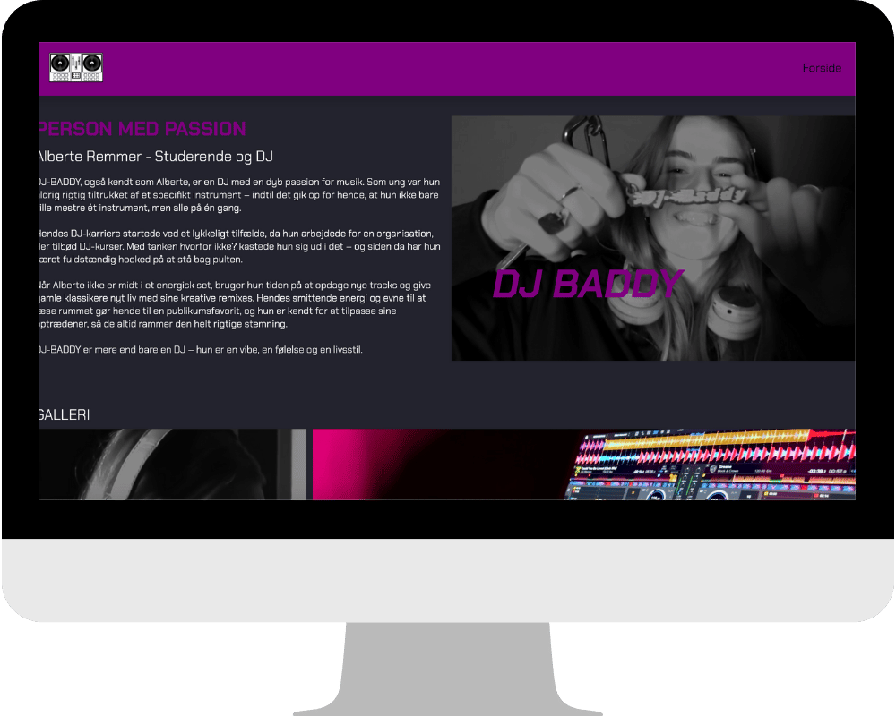
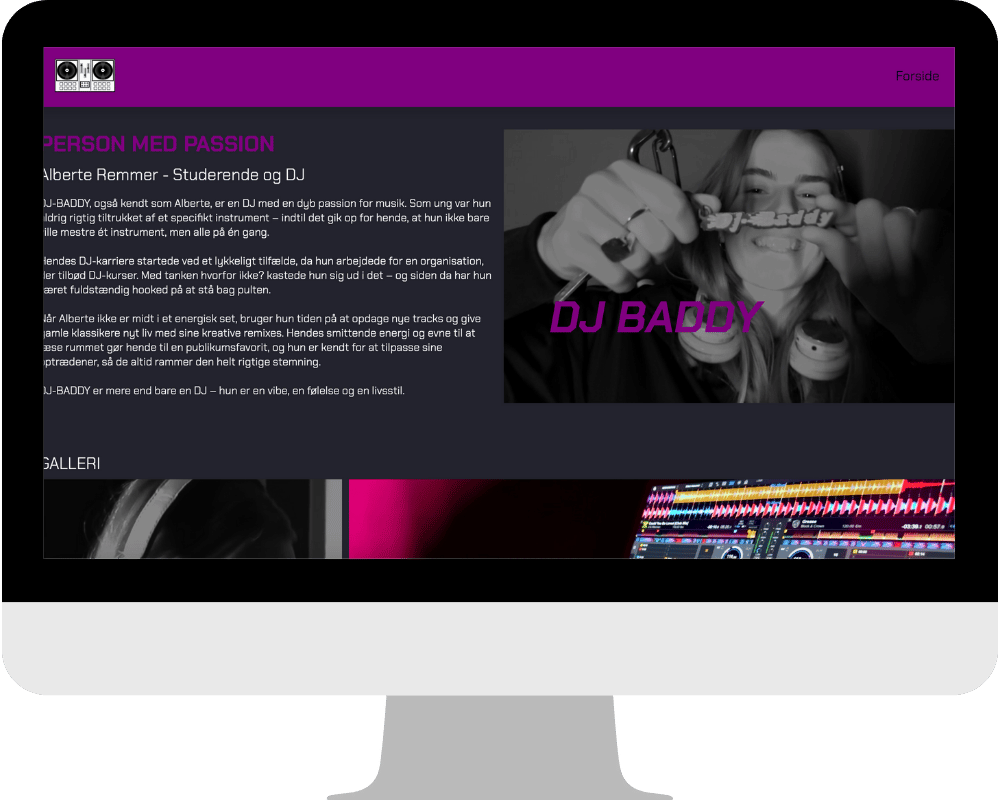
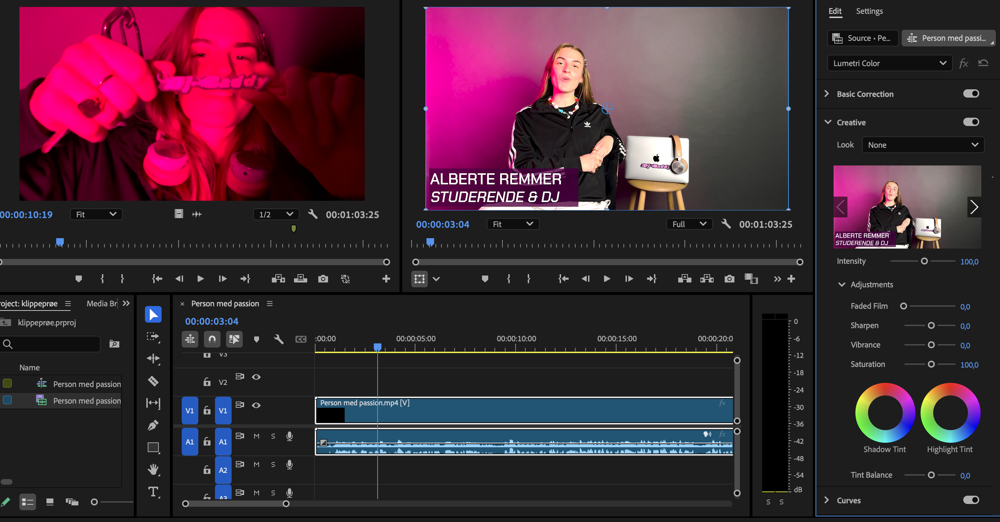
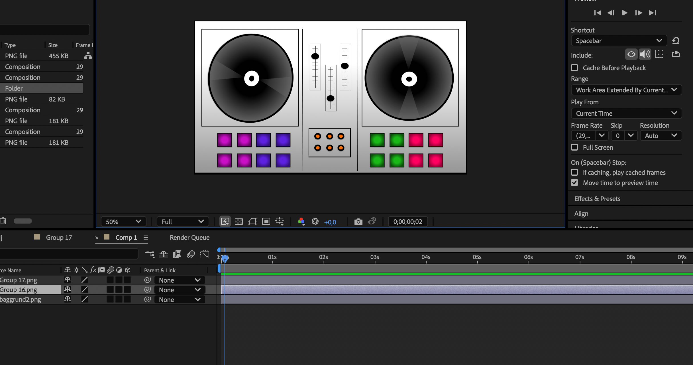
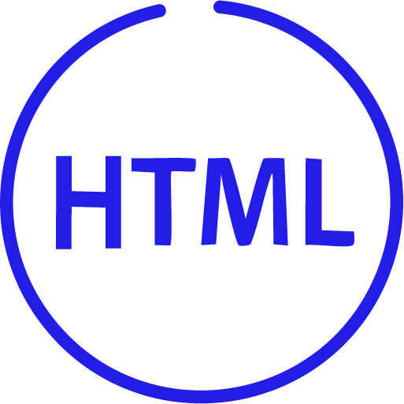

TEMA 05
GRUNDLÆGGENDE INDHOLD
 

I dette tema har jeg arbejdet med indholdsproduktion, hvor jeg både har fokuseret på præproduktion og
selve
produktionen.
Jeg har benyttet en række programmer, herunder Adobe Premiere Pro, Audition, After
Effects, Photoshop og
Lightroom. Temaet omfattede to projekter: et redesign af et virksomhedswebsite og et passionsite.
PASSIONSITE
PRÆPRODUKTION
OG PRODUKTION

Mit første projekt var at skabe et passionsite, der skulle indeholde et interview med en person, som havde en passion. Efter at have valgt en person til projektet gik jeg i gang med præproduktionen af interviewet. Jeg startede med at udarbejde et storyboard for at få et overblik over, hvilke klip, settings og kameravinkler jeg ønskede at bruge i videoen. Det gav mig en klar struktur og hjalp med at organisere optagelserne. Herefter undersøgte jeg, hvilket udstyr der ville være nødvendigt, og valgte en passende lokation til optagelserne. Da præproduktionen var på plads, gik jeg videre til selve produktionen og optog interviewet.

POST-
PRODUKTION
Efter optagelserne redigerede jeg videoen i Adobe Premiere Pro, hvor jeg blandt andet arbejdede med klipning, farvejustering (grading) og sammensætning af de forskellige optagelser. Med den færdige video i hånden fortsatte jeg med designet af websitet.
DESIGN

En vigtig del af projektet var også at skabe en animeret Lottie-fil til hero-sektionen på websitet. Denne animation blev først designet og tegnet i Adobe Illustrator og derefter animeret i After Effects. Med videoen og animationen klar gik jeg i gang med at designe og kode websitet baseret på de wireframes, der var blevet udarbejdet på forhånd.
VIRKSOMHEDSSITE
RESEARCH

Mit andet projekt i dette tema handlede om at redesigne et eksisterende virksomhedswebsite. Vi startede med at researche og udvælge en virksomhed, og jeg valgte at arbejde med Kimia Healing Space. Efter at have besluttet os for virksomheden, brainstormede vi idéer til redesignet og lavede moodboards for at visualisere, hvordan vi ønskede, at websitet skulle fremstå.
DESIGN OG PROTOTYPE
Herefter begyndte vi at planlægge den overordnede struktur ved at udarbejde et sitemap og designe både LoFi- og HiFi-wireframes. Disse elementer gav os et klart billede af layoutet og opbygningen. På baggrund af vores wireframes udviklede vi en digital prototype, som skulle give en realistisk fornemmelse af det færdige website. Prototypen blev testet ved hjælp af metoder som 5-sekunders test og tænke-højt-test. Den feedback, vi modtog fra testene, blev anvendt til at forbedre designet.


KODNING
Efter justeringerne gik vi i gang med at lave layoutdiagrammer og begyndte at kode selve websitet. Her brugte vi GitHub, for at alle kunne kode samtidig. Projektet blev afsluttet med en pitch, hvor vi præsenterede vores redesign og fik yderligere feedback, som vi brugte til at finpudse det endelige resultat.

LØSNING
Tryk på computeren for at se mit færdige resultat.